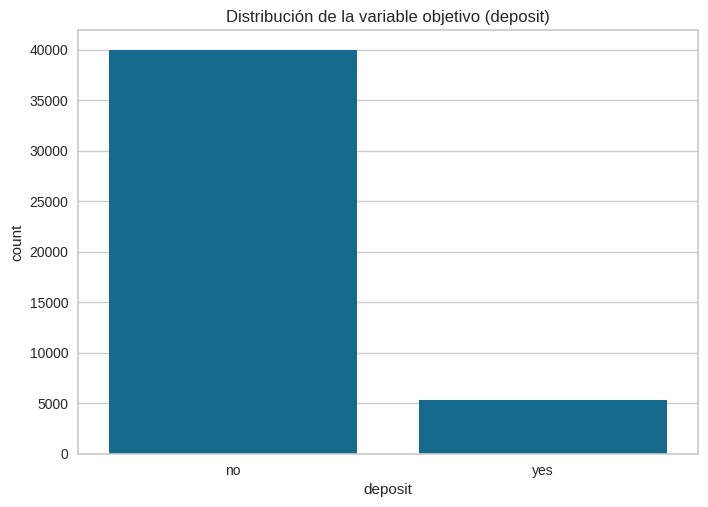
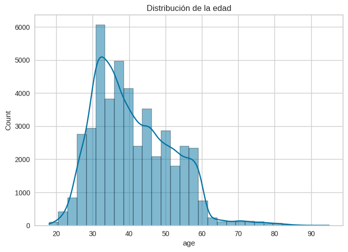
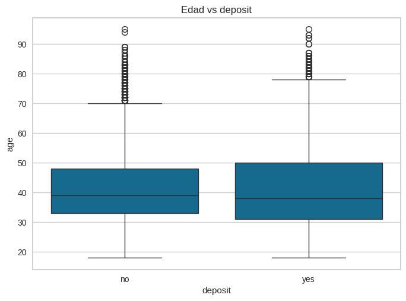
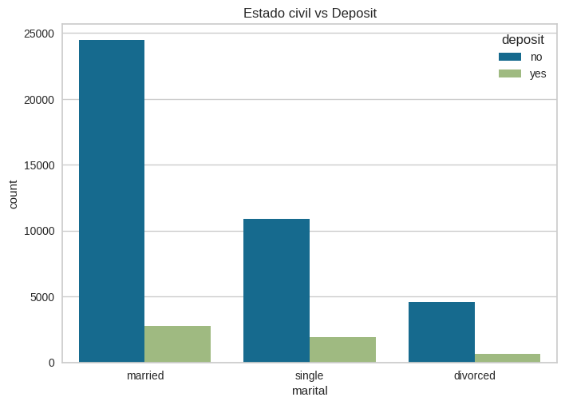
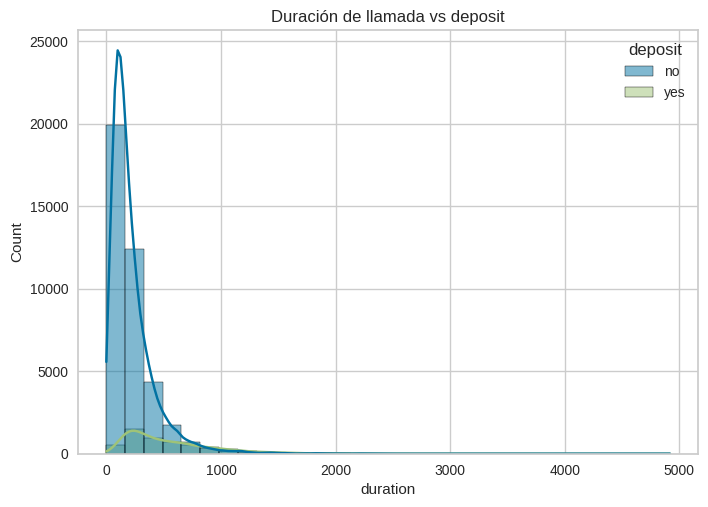
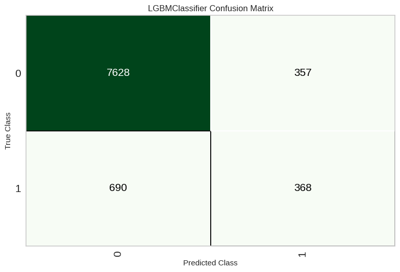
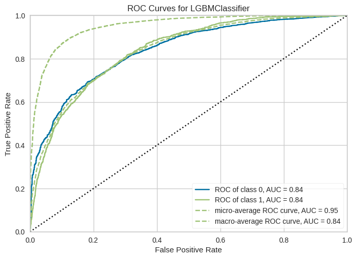
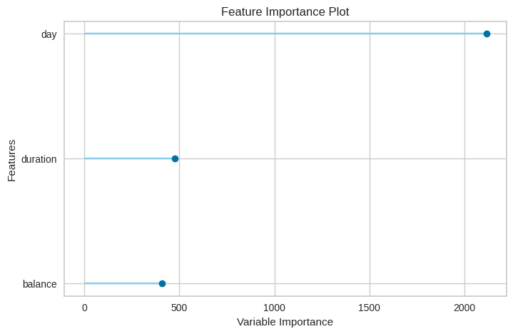
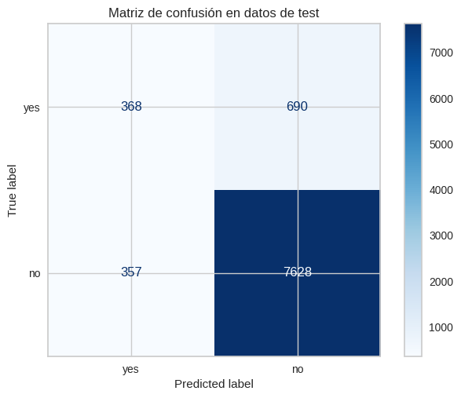

Analisis del dataset de bank
El dataset bank proviene de una campaña de marketing de un banco portugués. Contiene información sobre clientes y llamadas telefónicas realizadas para promocionar depósitos a plazo fijo. El objetivo es predecir si un cliente aceptará abrir un depósito
Cargar las librerias y el dataset
import matplotlib.pyplot as plt
import matplotlib as mpl
import seaborn as sns
from pycaret.datasets import get_data
from pycaret.classification import *
import os, contextlib
from sklearn.metrics import confusion_matrix, ConfusionMatrixDisplaydata = get_data("bank")| age | job | marital | education | default | balance | housing | loan | contact | day | month | duration | campaign | pdays | previous | poutcome | deposit | |
|---|---|---|---|---|---|---|---|---|---|---|---|---|---|---|---|---|---|
| 0 | 58 | management | married | tertiary | no | 2143 | yes | no | unknown | 5 | may | 261 | 1 | -1 | 0 | unknown | no |
| 1 | 44 | technician | single | secondary | no | 29 | yes | no | unknown | 5 | may | 151 | 1 | -1 | 0 | unknown | no |
| 2 | 33 | entrepreneur | married | secondary | no | 2 | yes | yes | unknown | 5 | may | 76 | 1 | -1 | 0 | unknown | no |
| 3 | 47 | blue-collar | married | unknown | no | 1506 | yes | no | unknown | 5 | may | 92 | 1 | -1 | 0 | unknown | no |
| 4 | 33 | unknown | single | unknown | no | 1 | no | no | unknown | 5 | may | 198 | 1 | -1 | 0 | unknown | no |
age: edad.
job: tipo de trabajo (admin, blue-collar, technician, etc.).
marital: estado civil (married, single, divorced).
education: nivel educativo.
default: si tiene créditos en default.
housing: si tiene préstamo hipotecario.
loan: si tiene préstamo personal.
month: mes de la última llamada.
day_of_week: día de la semana de la última llamada.
duration: duración de la llamada (segundos).
campaign: número de contactos realizados durante la campaña.
pdays: días desde el último contacto en una campaña anterior.
previous: número de contactos anteriores.
poutcome: resultado de la campaña anterior.
Análisis Exploratorio de Datos
data.info()<class 'pandas.core.frame.DataFrame'>
RangeIndex: 45211 entries, 0 to 45210
Data columns (total 17 columns):
# Column Non-Null Count Dtype
--- ------ -------------- -----
0 age 45211 non-null int64
1 job 45211 non-null object
2 marital 45211 non-null object
3 education 45211 non-null object
4 default 45211 non-null object
5 balance 45211 non-null int64
6 housing 45211 non-null object
7 loan 45211 non-null object
8 contact 45211 non-null object
9 day 45211 non-null int64
10 month 45211 non-null object
11 duration 45211 non-null int64
12 campaign 45211 non-null int64
13 pdays 45211 non-null int64
14 previous 45211 non-null int64
15 poutcome 45211 non-null object
16 deposit 45211 non-null object
dtypes: int64(7), object(10)
memory usage: 5.9+ MBHay 10 variables categoricas, incluyendo a la variable objetivo, y 7 variables numerica
data.isna().sum()age 0
job 0
marital 0
education 0
default 0
balance 0
housing 0
loan 0
contact 0
day 0
month 0
duration 0
campaign 0
pdays 0
previous 0
poutcome 0
deposit 0
dtype: int64No existen valores faltantes
data['deposit'].value_counts()deposit
no 39922
yes 5289
Name: count, dtype: int64Existe un desbalance en la variable objetivo
categoricas = data.select_dtypes(include=["object"])
categoricas.nunique()job 12
marital 3
education 4
default 2
housing 2
loan 2
contact 3
month 12
poutcome 4
deposit 2
dtype: int64Se observa que job tiene 12 distintos de trabajo en el dataset
numeric = data.select_dtypes(include=["number"])
numeric.describe().round(2)| age | balance | day | duration | campaign | pdays | previous | |
|---|---|---|---|---|---|---|---|
| count | 45211.00 | 45211.00 | 45211.00 | 45211.00 | 45211.00 | 45211.00 | 45211.00 |
| mean | 40.94 | 1362.27 | 15.81 | 258.16 | 2.76 | 40.20 | 0.58 |
| std | 10.62 | 3044.77 | 8.32 | 257.53 | 3.10 | 100.13 | 2.30 |
| min | 18.00 | -8019.00 | 1.00 | 0.00 | 1.00 | -1.00 | 0.00 |
| 25% | 33.00 | 72.00 | 8.00 | 103.00 | 1.00 | -1.00 | 0.00 |
| 50% | 39.00 | 448.00 | 16.00 | 180.00 | 2.00 | -1.00 | 0.00 |
| 75% | 48.00 | 1428.00 | 21.00 | 319.00 | 3.00 | -1.00 | 0.00 |
| max | 95.00 | 102127.00 | 31.00 | 4918.00 | 63.00 | 871.00 | 275.00 |
Resumen estadístico de las variables numericas, la variable balance, tiene mayor dispersión de los datos con respecto a su media
sns.countplot(x='deposit', data=data)
plt.title('Distribución de la variable objetivo (deposit)');
La proporción de la variable deposit no es similar
sns.histplot(data['age'], bins=30, kde=True)
plt.title('Distribución de la edad');
La mayoria de individuos tiene entre 30 a 40 años
sns.boxplot(x='deposit', y='age', data=data)
plt.title('Edad vs deposit');
El gráfico muestra las diferencias de edad entre quienes aceptan y quienes no.
sns.countplot(x='marital', hue='deposit', data=data)
plt.title('Estado civil vs Deposit');
El gráfico permite ver si el estado civil influye en la decisiones
plt.figure(figsize=(10,5))
sns.countplot(y='job', hue='deposit', data=data, order=data['job'].value_counts().index)
plt.title('Tipo de trabajo vs Deposit');
El gráfico muestra qué profesiones tienen mayor tasa de aceptación.
sns.histplot(data=data, x='duration', hue='deposit', bins=30, kde=True)
plt.title('Duración de llamada vs deposit');
data.groupby("deposit")["duration"].describe().round(2)| count | mean | std | min | 25% | 50% | 75% | max | |
|---|---|---|---|---|---|---|---|---|
| deposit | ||||||||
| no | 39922.0 | 221.18 | 207.38 | 0.0 | 95.0 | 164.0 | 279.0 | 4918.0 |
| yes | 5289.0 | 537.29 | 392.53 | 8.0 | 244.0 | 426.0 | 725.0 | 3881.0 |
La duración de las llamadas parece ser muy influyente: llamadas más largas tienden a correlacionarse con aceptación.
Modelado
Para modelar en pycaret es necesario separar segun el tipos de variable y convertir en listas
categoricas = data.select_dtypes(include=["object"]).columns.tolist()
numericas = data.select_dtypes(include=["number"]).columns.tolist()
print(categoricas)['job', 'marital', 'education', 'default', 'housing', 'loan', 'contact', 'month', 'poutcome', 'deposit']Se realiza un SMOTE en el dataset para datos sinteticos, por el tema de desbalance, se utiliza el 80% del dataset para el entrenamiento.
with contextlib.redirect_stdout(open(os.devnull, 'w')):
clf = setup(
data=data,
target='deposit',
fix_imbalance=True,
fix_imbalance_method='SMOTE',
train_size=0.8,
session_id=7402,
numeric_features=numericas,
categorical_features=categoricas[:-1],
normalize=True,
transformation=True,
feature_selection=True,
remove_multicollinearity=True,
multicollinearity_threshold=0.9,
use_gpu=True, verbose=True )| Description | Value | |
|---|---|---|
| 0 | Session id | 7402 |
| 1 | Target | deposit |
| 2 | Target type | Binary |
| 3 | Target mapping | no: 0, yes: 1 |
| 4 | Original data shape | (45211, 17) |
| 5 | Transformed data shape | (72917, 4) |
| 6 | Transformed train set shape | (63874, 4) |
| 7 | Transformed test set shape | (9043, 4) |
| 8 | Numeric features | 7 |
| 9 | Categorical features | 9 |
| 10 | Preprocess | True |
| 11 | Imputation type | simple |
| 12 | Numeric imputation | mean |
| 13 | Categorical imputation | mode |
| 14 | Maximum one-hot encoding | 25 |
| 15 | Encoding method | None |
| 16 | Remove multicollinearity | True |
| 17 | Multicollinearity threshold | 0.900000 |
| 18 | Fix imbalance | True |
| 19 | Fix imbalance method | SMOTE |
| 20 | Transformation | True |
| 21 | Transformation method | yeo-johnson |
| 22 | Normalize | True |
| 23 | Normalize method | zscore |
| 24 | Feature selection | True |
| 25 | Feature selection method | classic |
| 26 | Feature selection estimator | lightgbm |
| 27 | Number of features selected | 0.200000 |
| 28 | Fold Generator | StratifiedKFold |
| 29 | Fold Number | 10 |
| 30 | CPU Jobs | -1 |
| 31 | Use GPU | True |
| 32 | Log Experiment | False |
| 33 | Experiment Name | clf-default-name |
| 34 | USI | beed |
Se selecciona como metrica el F1 porque nos da un balance entre Recall y Precision
best = compare_models(sort='F1')
best| Model | Accuracy | AUC | Recall | Prec. | F1 | Kappa | MCC | TT (Sec) | |
|---|---|---|---|---|---|---|---|---|---|
| lightgbm | Light Gradient Boosting Machine | 0.8821 | 0.8303 | 0.8821 | 0.8657 | 0.8714 | 0.3317 | 0.3406 | 2.4650 |
| xgboost | Extreme Gradient Boosting | 0.8712 | 0.8191 | 0.8712 | 0.8630 | 0.8663 | 0.3311 | 0.3340 | 2.0040 |
| et | Extra Trees Classifier | 0.8466 | 0.7836 | 0.8466 | 0.8534 | 0.8498 | 0.2893 | 0.2897 | 2.1900 |
| gbc | Gradient Boosting Classifier | 0.8294 | 0.8212 | 0.8294 | 0.8683 | 0.8450 | 0.3382 | 0.3502 | 5.7350 |
| rf | Random Forest Classifier | 0.8327 | 0.7907 | 0.8327 | 0.8562 | 0.8428 | 0.2944 | 0.2992 | 2.6410 |
| dummy | Dummy Classifier | 0.8830 | 0.5000 | 0.8830 | 0.7797 | 0.8282 | 0.0000 | 0.0000 | 1.8110 |
| dt | Decision Tree Classifier | 0.8193 | 0.6025 | 0.8193 | 0.8330 | 0.8257 | 0.1897 | 0.1907 | 2.0340 |
| catboost | CatBoost Classifier | 0.7862 | 0.8208 | 0.7862 | 0.8714 | 0.8162 | 0.3072 | 0.3404 | 4.2160 |
| svm | SVM - Linear Kernel | 0.7503 | 0.8115 | 0.7503 | 0.8696 | 0.7901 | 0.2704 | 0.3159 | 1.9090 |
| knn | K Neighbors Classifier | 0.7442 | 0.7603 | 0.7442 | 0.8591 | 0.7841 | 0.2384 | 0.2753 | 1.9720 |
| ada | Ada Boost Classifier | 0.7418 | 0.8107 | 0.7418 | 0.8700 | 0.7839 | 0.2639 | 0.3127 | 2.7380 |
| ridge | Ridge Classifier | 0.7386 | 0.8121 | 0.7386 | 0.8704 | 0.7816 | 0.2624 | 0.3128 | 1.8630 |
| lda | Linear Discriminant Analysis | 0.7386 | 0.8121 | 0.7386 | 0.8704 | 0.7816 | 0.2624 | 0.3128 | 1.8940 |
| lr | Logistic Regression | 0.7376 | 0.8122 | 0.7376 | 0.8711 | 0.7810 | 0.2631 | 0.3145 | 1.9060 |
| nb | Naive Bayes | 0.7308 | 0.8056 | 0.7308 | 0.8689 | 0.7756 | 0.2522 | 0.3035 | 1.8410 |
| qda | Quadratic Discriminant Analysis | 0.7305 | 0.8066 | 0.7305 | 0.8692 | 0.7755 | 0.2529 | 0.3047 | 1.8390 |
LGBMClassifier(boosting_type='gbdt', class_weight=None, colsample_bytree=1.0,
device='gpu', importance_type='split', learning_rate=0.1,
max_depth=-1, min_child_samples=20, min_child_weight=0.001,
min_split_gain=0.0, n_estimators=100, n_jobs=-1, num_leaves=31,
objective=None, random_state=7402, reg_alpha=0.0, reg_lambda=0.0,
subsample=1.0, subsample_for_bin=200000, subsample_freq=0)
In a Jupyter environment, please rerun this cell to show the HTML representation or trust the notebook. On GitHub, the HTML representation is unable to render, please try loading this page with nbviewer.org.
LGBMClassifier(boosting_type='gbdt', class_weight=None, colsample_bytree=1.0,
device='gpu', importance_type='split', learning_rate=0.1,
max_depth=-1, min_child_samples=20, min_child_weight=0.001,
min_split_gain=0.0, n_estimators=100, n_jobs=-1, num_leaves=31,
objective=None, random_state=7402, reg_alpha=0.0, reg_lambda=0.0,
subsample=1.0, subsample_for_bin=200000, subsample_freq=0)
Se elegio el modelo Light Gradient Boosting Machine ya que proporciona un F1 alto y un AUC
lightgbm= create_model('lightgbm')| Accuracy | AUC | Recall | Prec. | F1 | Kappa | MCC | |
|---|---|---|---|---|---|---|---|
| Fold | |||||||
| 0 | 0.8886 | 0.8350 | 0.8886 | 0.8708 | 0.8758 | 0.3459 | 0.3604 |
| 1 | 0.8806 | 0.8165 | 0.8806 | 0.8611 | 0.8677 | 0.3048 | 0.3160 |
| 2 | 0.8864 | 0.8510 | 0.8864 | 0.8730 | 0.8779 | 0.3719 | 0.3784 |
| 3 | 0.8819 | 0.8315 | 0.8819 | 0.8682 | 0.8735 | 0.3505 | 0.3562 |
| 4 | 0.8728 | 0.8176 | 0.8728 | 0.8552 | 0.8622 | 0.2862 | 0.2926 |
| 5 | 0.8781 | 0.8274 | 0.8781 | 0.8607 | 0.8672 | 0.3099 | 0.3177 |
| 6 | 0.8883 | 0.8259 | 0.8883 | 0.8717 | 0.8768 | 0.3547 | 0.3665 |
| 7 | 0.8761 | 0.8296 | 0.8761 | 0.8613 | 0.8672 | 0.3178 | 0.3230 |
| 8 | 0.8800 | 0.8302 | 0.8800 | 0.8625 | 0.8688 | 0.3167 | 0.3255 |
| 9 | 0.8880 | 0.8385 | 0.8880 | 0.8720 | 0.8771 | 0.3585 | 0.3692 |
| Mean | 0.8821 | 0.8303 | 0.8821 | 0.8657 | 0.8714 | 0.3317 | 0.3406 |
| Std | 0.0053 | 0.0095 | 0.0053 | 0.0059 | 0.0052 | 0.0267 | 0.0274 |
Se optimiza hiperparámetros del modelo seleccionado
lightgbm_tuned = tune_model(lightgbm, optimize='F1')
lightgbm_tunedLGBMClassifier(boosting_type='gbdt', class_weight=None, colsample_bytree=1.0,
device='gpu', importance_type='split', learning_rate=0.1,
max_depth=-1, min_child_samples=20, min_child_weight=0.001,
min_split_gain=0.0, n_estimators=100, n_jobs=-1, num_leaves=31,
objective=None, random_state=7402, reg_alpha=0.0, reg_lambda=0.0,
subsample=1.0, subsample_for_bin=200000, subsample_freq=0)
In a Jupyter environment, please rerun this cell to show the HTML representation or trust the notebook. On GitHub, the HTML representation is unable to render, please try loading this page with nbviewer.org.
LGBMClassifier(boosting_type='gbdt', class_weight=None, colsample_bytree=1.0,
device='gpu', importance_type='split', learning_rate=0.1,
max_depth=-1, min_child_samples=20, min_child_weight=0.001,
min_split_gain=0.0, n_estimators=100, n_jobs=-1, num_leaves=31,
objective=None, random_state=7402, reg_alpha=0.0, reg_lambda=0.0,
subsample=1.0, subsample_for_bin=200000, subsample_freq=0)
Matriz de confusion de los datos de entrenamiento
plot_model(lightgbm_tuned, plot='confusion_matrix')
Curva ROC
plot_model(lightgbm_tuned, plot='auc')
Las variables mas importantes fueron: dia de la semana de la ultima llamada, la duracion de la llamada y balance
plot_model(lightgbm_tuned, plot='feature')
Vamos a utilizar el modelo entrenado sobre el dataset de test, que fueron el 20%, en el cual tenemos un F1 del 0.8746
holdout_preds = predict_model(lightgbm_tuned)
holdout_preds.head()| Model | Accuracy | AUC | Recall | Prec. | F1 | Kappa | MCC | |
|---|---|---|---|---|---|---|---|---|
| 0 | Light Gradient Boosting Machine | 0.8842 | 0.8382 | 0.8842 | 0.8691 | 0.8746 | 0.3510 | 0.3588 |
| age | job | marital | education | default | balance | housing | loan | contact | day | month | duration | campaign | pdays | previous | poutcome | deposit | prediction_label | prediction_score | |
|---|---|---|---|---|---|---|---|---|---|---|---|---|---|---|---|---|---|---|---|
| 23776 | 55 | technician | married | secondary | no | 55 | no | yes | cellular | 28 | aug | 19 | 17 | -1 | 0 | unknown | no | no | 0.9991 |
| 29237 | 60 | blue-collar | married | secondary | no | 272 | no | no | cellular | 2 | feb | 421 | 1 | -1 | 0 | unknown | no | no | 0.6191 |
| 41064 | 38 | technician | divorced | secondary | no | 902 | yes | no | cellular | 14 | aug | 108 | 1 | 102 | 4 | success | no | no | 0.9177 |
| 21071 | 57 | retired | married | secondary | no | 209 | no | no | cellular | 14 | aug | 56 | 4 | -1 | 0 | unknown | no | no | 0.9892 |
| 43775 | 78 | retired | married | primary | no | 680 | no | no | telephone | 24 | may | 838 | 1 | 89 | 9 | failure | no | no | 0.5004 |
Matriz de confusion sobre el dataset de test
y_true = holdout_preds['deposit']
y_pred = holdout_preds['prediction_label']
cm = confusion_matrix(y_true, y_pred, labels=['yes','no'])
disp = ConfusionMatrixDisplay(confusion_matrix=cm, display_labels=['yes','no'])
disp.plot(cmap='Blues')
plt.title("Matriz de confusión en datos de test");